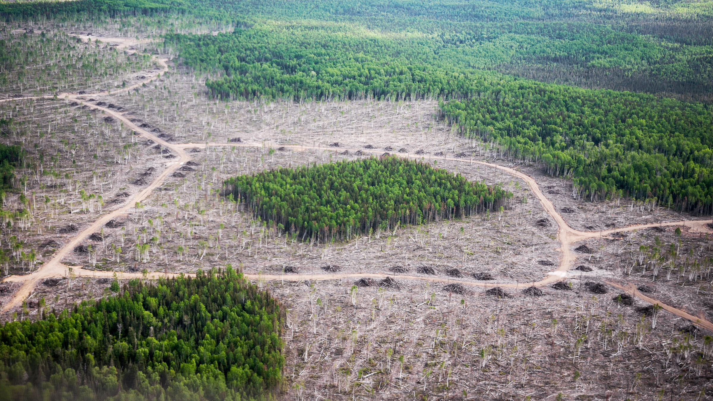

The Sri Lankan Leopard
The Sri Lankan Leopard (Panthera pardus kotiya) is a majestic and endangered big cat species native to the island of Sri Lanka. As a distinct sub-species of the leopard, it holds significant ecological importance and cultural value within the region.
The Sri Lankan Leopard
The Sri Lankan Leopard (Panthera pardus kotiya) is an endangered big cat species native to Sri Lanka, recognized for its distinctive coat pattern with large rosettes ranging from pale yellow to tawny. Inhabiting diverse ecosystems like dry forests, rainforests, and grasslands, these leopards face threats from habitat loss and human-wildlife conflict. Despite their adaptability, the species is listed as Endangered on the IUCN Red List due to poaching and habitat destruction.
Sri Lankan Leopards exhibit solitary behavior, marking and defending territories, and showcase remarkable climbing and swimming abilities. Their diet includes various prey like deer, wild boar, and monkeys. In Sri Lankan culture, these leopards hold significance in folklore and art, symbolizing strength and beauty.
Conservation initiatives are underway, marked by protected areas, community-based programs, and research efforts. Habitat protection, conflict mitigation, and anti-poaching measures are integral to the conservation strategy. The majestic Sri Lankan Leopard, facing threats to its survival, remains a cultural icon, emphasizing the urgency of conservation to preserve this species for future generations.
Here are some venues where leopards are commonly found:
Yala National Park:
Yala National Park, situated in the southeastern part of Sri Lanka, is renowned for its high density of leopards. The park encompasses diverse ecosystems, including dry woodlands, scrub jungles, and coastal lagoons, providing an ideal habitat for leopards.
Location: Southeastern Sri Lanka.
Wilpattu National Park:
As the oldest and largest national park in Sri Lanka, Wilpattu is known for its pristine wilderness and is a prime location for leopard sightings. The park features a mix of dense scrub jungles, natural lakes, and grasslands, providing an excellent environment for leopards to thrive. Location: Northwest coast of Sri Lanka.
Horton Plains National Park:
Nestled in the central highlands, Horton Plains National Park offers a unique habitat for leopards amidst montane grasslands and cloud forests. The park is home to the iconic World's End escarpment, and leopards are known to roam the silent forests of this picturesque landscape. Location: Central Sri Lanka.
Knuckles Mountain Range:
The Knuckles Mountain Range, a UNESCO World Heritage Site, provides a rugged and diverse landscape that serves as a habitat for leopards. The range features cloud forests, montane grasslands, and an intricate network of trails that offer a chance to encounter leopards in their natural environment.
Location: Central Sri Lanka.
.png)
Leopards in Sri Lanka face numerous threats that jeopardize their survival and the delicate balance of ecosystems. Here's two primary threats that leopards are facing in sri lanka:
- Habitat loss and fragmentation.
- Illegal wildlife trade and poaching.
1. Habitat Loss and Fragmentation:

The rapid expansion of human activities, including urbanization, agriculture, and infrastructure development, leads to significant habitat loss and fragmentation for leopards. Shrinking natural habitats force leopards into closer proximity to human settlements, resulting in increased human-leopard conflict.
Consequences:
Disruption of natural behaviors and hunting patterns for leopards.
Escalation in human-leopard conflicts, often resulting in retaliatory killings.
Loss of biodiversity and disturbance in the ecological equilibrium.
Mechanisms taken to Reduce Threat:
- Expansion of Protected Areas:
Strengthening and enlarging existing protected areas to provide larger, contiguous habitats. - Wildlife Corridor Establishment:
Creating safe corridors to connect fragmented habitats and enable safe movement. - Community Education:
Raising awareness among local communities about coexistence and sustainable land use.
Leopard Conservation Institution in Sri Lanka
For more information and to support leopard conservation efforts in Sri Lanka, you can visit:
Wildlife Conservation Society of Galle (WCSG)2. Illegal Wildlife Trade and Poaching:
.jpg)
The illegal wildlife trade, driven by demand for leopard skins, bones, and other body parts, poses a severe threat to leopard populations. Poaching activities not only endanger individual leopards but also disrupt the ecological roles they play in maintaining a balanced ecosystem.
Consequences:
Decline in leopard populations due to direct killing.
Disruption of the ecological balance and natural prey-predator relationships.
Increased vulnerability of leopards to other threats due to a diminished population.
Mechanisms taken to Reduce Threat:
- Strengthening Law Enforcement:
Intensifying efforts to combat illegal wildlife trade through stricter law enforcement. - Community Engagement:
Involving local communities in anti-poaching initiatives and encouraging reporting of illegal activities. - Advocacy and Awareness:
Collaborating with international organizations to advocate for stricter regulations against the illegal trade of leopard parts.
Leopard Conservation Institution in Sri Lanka
For more information and to support leopard conservation efforts in Sri Lanka, you can visit:
Sri Lanka Wildlife Conservation Society (SLWCS)